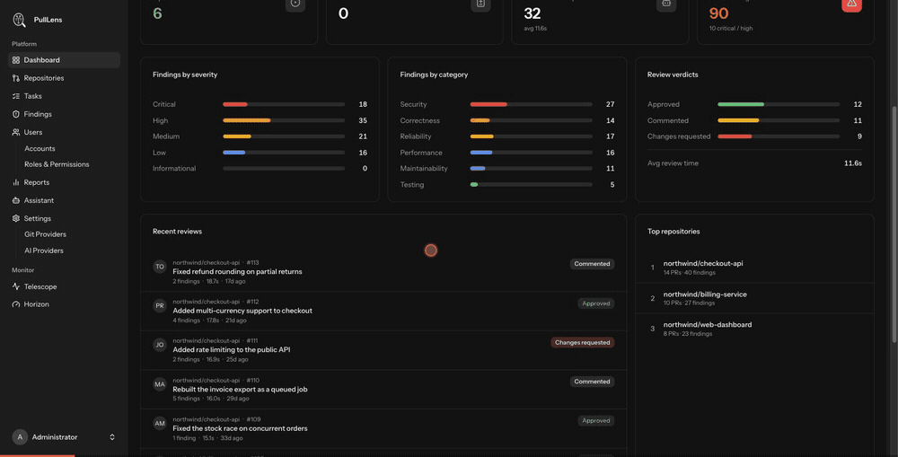

What PullLens does
A self-hosted AI code reviewer and engineering-visibility platform. This guide takes you from an empty server to a repository under review.

The two questions it answers
PullLens watches your Git repositories and reviews every pull request with an AI model that you supply the key for. From that same review it also works out what the pull request delivered, so two normally-hard questions become a page you can open:
- What did we merge that we shouldn't have? Security holes, race conditions, N+1 queries, missing authorization - reported on the exact lines, with a suggested fix.
- What did everyone actually ship this month? Not commit counts. Real units of work, attributed to a developer, linked to the pull request and commits that delivered them.
How it works
- A pull request is opened or updated GitHub sends PullLens a webhook. The signature is verified before anything is processed.
- PullLens fetches the diff Only the files worth reviewing - lock files, build output and binaries are skipped.
- Your AI provider reviews it The diff goes to the provider you configured, using your API key. PullLens has no model of its own and no cloud service in the path.
- Findings are posted back Inline comments on the affected lines, plus a summary review.
- Tasks and metrics are recorded The same response yields the delivered tasks, which feed the reports.
There is no PullLens cloud. The only outbound call is to the AI provider you choose, with the key you own. If code may not leave your network at all, point PullLens at a local Ollama instance - everything still works, and nothing leaves your infrastructure.
Where to go next
Install PullLens →
Requirements, one-command install, and what the installer does.
Connect an AI provider →
All twelve supported providers and which model to pick.
Connect GitHub →
Create the GitHub App and grant repository access.
Repository settings →
Every switch, explained one by one.
Terms used in this guide
| Term | Meaning |
|---|---|
| Finding | One problem the reviewer identified in a pull request, with a severity and a category. |
| Task | One unit of work a pull request delivered - a feature, a bug fix, a refactor. |
| Review | A single AI pass over a pull request. A pull request gets a new review each time it is updated. |
| Provider | The AI service doing the reviewing - Anthropic, OpenAI, a local Ollama, and so on. |
| Tracked repository | A repository you have told PullLens to watch. |